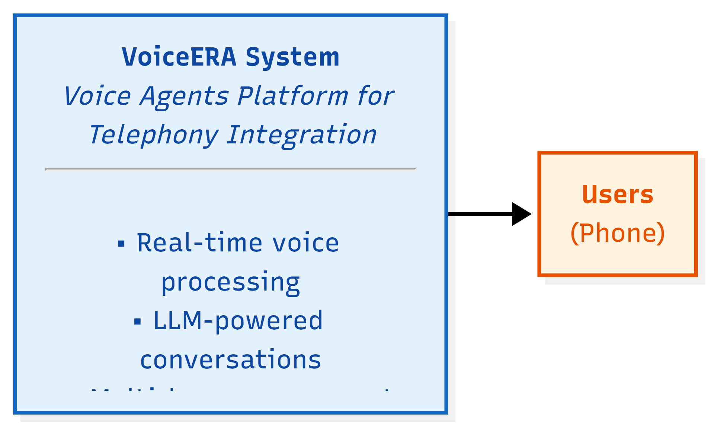
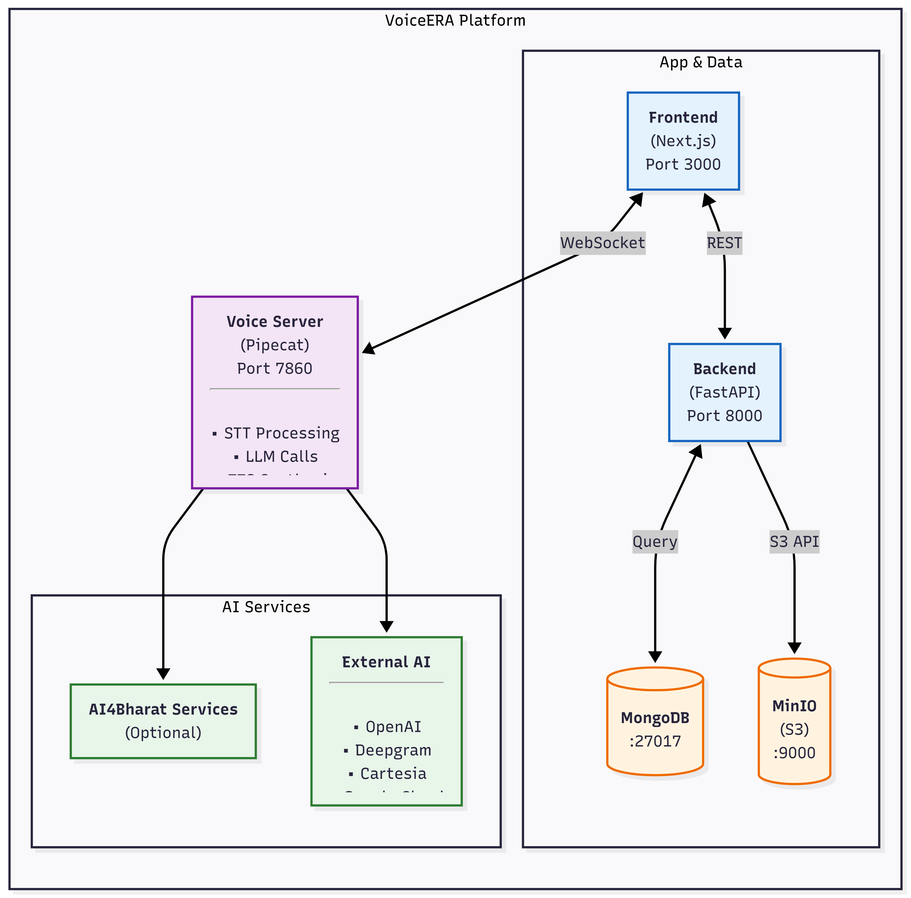
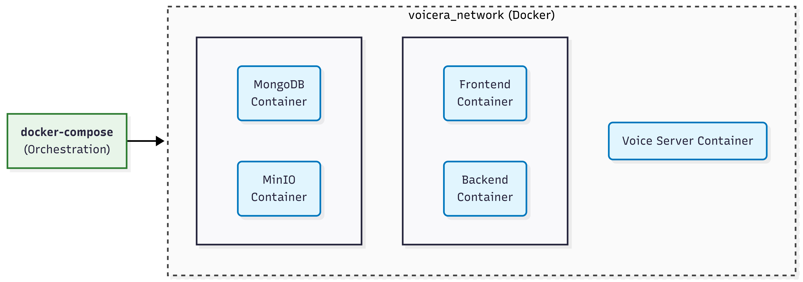

System Architecture Overview¶
This document provides a high-level overview of the VoiceERA system architecture using the C4 Model for system design.
System Context (Level 1)¶
The "10,000-foot view" showing VoiceERA's interactions with users and external systems.
Overview¶

Key Actors¶
- End Users: People making/receiving voice calls
- Platform Operators: Administrators managing agents and campaigns
- AI Providers: External services for LLM, STT, TTS
- Telephony Provider: Vobiz platform for call handling
Container Diagram (Level 2)¶
Zooming in to show the major technology choices and inter-service communication.
Architecture Components¶

Service Responsibilities¶
| Service | Technology | Responsibility |
|---|---|---|
| Frontend | Next.js, React, TailwindCSS | User interface, dashboards, real-time call monitoring |
| Backend | FastAPI, Python | API endpoints, data persistence, authentication, orchestration |
| Voice Server | Pipecat, Python | Real-time audio processing, agent orchestration, AI integration |
| MongoDB | NoSQL Database | Store users, agents, campaigns, call logs, transcripts |
| MinIO | Object Storage | Store audio files, recordings, transcripts |
| External AI | Various APIs | LLM, STT, TTS, Translation services |
Key Design Patterns¶
1. Microservices Architecture¶
- Independent, deployable services
- Clear separation of concerns
- Horizontal scaling capability
2. API-First Design¶
- RESTful APIs for data operations
- WebSockets for real-time communication
- Clear service boundaries
3. Stateless Processing¶
- Frontend and Backend are stateless
- Enables horizontal scaling
- Voice Server maintains session state (WebSocket connections)
4. External Service Integration¶
- Pluggable AI providers
- Flexible STT/TTS/LLM configuration
- Fallback and failover support
5. Data Separation¶
- Structured data in MongoDB
- Unstructured content (audio/files) in MinIO
- Clear data ownership per service
Communication Patterns¶
Synchronous Communication¶
Frontend ──REST/HTTP──► Backend ──HTTP──► MongoDB
◄───────────── ◄──────────
Real-Time Communication¶
Frontend ──WebSocket────► Voice Server ───► External AI
◄───────────────── ◄──
(Audio frames, metadata)
Event-Based Processing¶
Backend ───write────► MongoDB
(User event, call data)
│
├──────► MinIO (Audio file)
│
└──────► Voice Server (via API)
Data Flow at a Glance¶
Voice Call Flow¶
1. User calls phone number
▼
2. Vobiz routes call to Voice Server
▼
3. Voice Server authenticates with Backend
▼
4. Voice Server processes audio:
- STT: Audio ──► Text
- LLM: Text ──► Response
- TTS: Response ──► Audio
▼
5. Voice Server streams audio back to caller
▼
6. Backend logs call metadata & stores recordings
Deployment Architecture¶
Docker Containers¶
Each service runs in its own container:

Volume Mounts¶
Host Machine Docker Container
───────────── ────────────────
./voicera_backend ──► /app
./voicera_frontend ──► /app
./data/mongodb ──► /data/db
./data/minio ──► /data
Security Layers¶
Authentication & Authorization¶
User Login
│
▼
Backend (JWT Token generation)
│
▼
Frontend (Store JWT)
│
▼
Voice Server (Validate JWT)
│
▼
Audio Processing
Data Protection¶
- In Transit: TLS/HTTPS for all external API calls
- At Rest: Database and storage encryption
- Access Control: MongoDB authentication, MinIO IAM
Scalability Considerations¶
Horizontal Scaling¶
Stateless Services: - Frontend (multiple replicas behind load balancer) - Backend (multiple replicas with shared MongoDB)
Stateful Services: - Voice Server (sticky sessions or session store like Redis) - MongoDB (replica set or sharding)
Vertical Scaling¶
- Increase CPU/Memory for services
- GPU acceleration for STT/TTS
- Connection pooling for databases
Technology Stack Summary¶
| Layer | Technology | Version |
|---|---|---|
| Frontend | Next.js | 16+ |
| React | 18+ | |
| TailwindCSS | 4+ | |
| Backend | FastAPI | 0.100+ |
| Python | 3.10+ | |
| Uvicorn | Latest | |
| Voice | Pipecat | Latest |
| Python | 3.10+ | |
| Database | MongoDB | 5.0+ |
| Storage | MinIO | Latest |
| Infrastructure | Docker | 20.10+ |
| Docker Compose | 1.29+ | |
| Nginx | Latest |
Next Steps¶
- System Design Details - Deep dive into each component
- Data Flow - How data moves through the system
- Quick Start - Start using VoiceERA